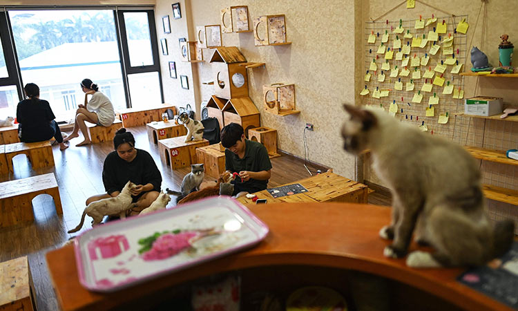

Información de Contacto
Horario
09:00am-07:00pm
Teléfono
646-000-00-00
Correo electrónico
jeannemakingart@gmail.com
Dirección
Ensenada, Baja California
"Un gran porcentaje de nuestras ventas va directamente dirigido a mantener nuestra asociación de rescate activa"

Páginas Recomendadas
Lista de páginas hermanas encargadas de informar, educar, rescatar o preservar vida silvestre animal